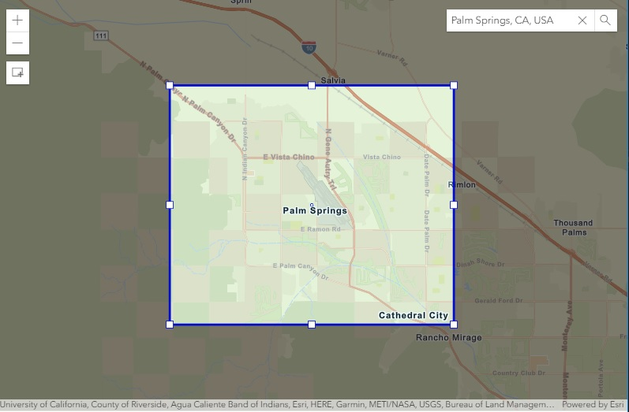

Creating a "Masked Extent" Effect

Tim Duggan
tduggan@esri.com
@TimDuggan
slides:
http://bit.ly/abc123
## The problem * Displaying an extent is easy * Creating a "mask" transparency is easy with layer settings or rgba() colors BUT ... What if I only want the mask on the OUTSIDE of the extent?
## The "donut polygon" * The ArcGIS javascript API supports multi-ring polygons * If an inner-ring is ordered in the opposite direction to the outer ring, it will be treated as a "donut hole" or a "window"
## "donut polygon" THE OUTER RING * The outer ring is set to the coordinates of the corners of the full possible extent of the map in clockwise order * for example, in WGS84, the ring could be <pre><code>[[90,180],[-90,180],[-90,-180],[90,-180],[90,180]]</code></pre> * a better way might be to find the full extent of the basemap's baselayer, which should work regardless of the spatial reference
## "donut polygon" - THE INNER RING * The inner ring represents the corners of the extent * In order be a "window" or "hole", it must list the coordinates in the opposite direction of the outer ring. * for example, <pre><code>[[34.8, -115.5],[34.8, -117.5],[32.8,-117.5],[32.8,-115.5],[34.8, -115.5]]</pre></code>
## THE FILL COLOR AND SYMBOL * This can be done at the layer level using the opacity property and a solid color for the polygon symbol * It can also be done at the polgyon symbol level using an rgba fill color - for example, <pre><code>var maskSymbol = new SimpleFillSymbol({ color: [0, 0, 0, 0.5], outline: { color: [128, 128, 128, 0.5], width: "0px" } });</code></pre>
## PUTTING IT TOGETHER * The symbol <pre><code>var maskSymbol = new SimpleFillSymbol({ color: [0, 0, 0, 0.5], outline: { color: [128, 128, 128, 0.5], width: "0px" } });</code></pre>
## PUTTING IT TOGETHER * The polygon <pre><code>var outerRing = [[90,180],[-90,180],[-90,-180],[90,-180],[90,180]]; var innerRing = [[34.8, -115.5],[34.8, -117.5],[32.8,-117.5],[32.8,-115.5],[34.8, -115.5]]; var maskPolygon = new Polygon({ rings: [outerRing, innerRing] });</code></pre>
## PUTTING IT TOGETHER * The graphic <pre><code>var maskGraphic = new Graphic({ geometry: maskPolygon, symbol: maskSymbol }); myMapLayer.add(maskGraphic);</code></pre>